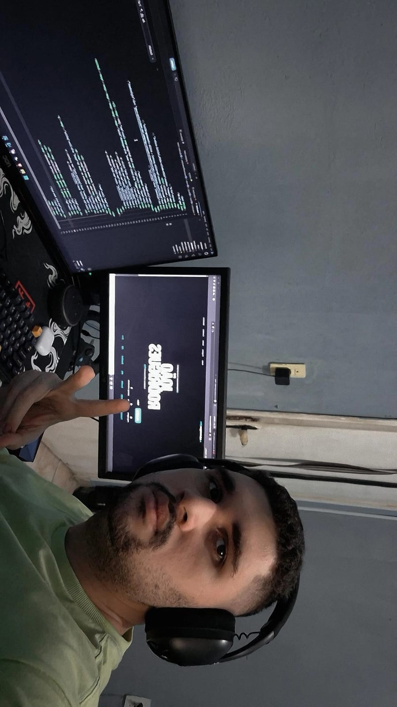

Sobre mim
Sou João Rodrigues, tenho 21 anos, e atualmente estou estuando Engenharia de Software, procuro sempre aprender algo novo, fascinado por tecnologia e carros, minha paixao por programacao comecou em 2024 onde comecei um curso de Desenvolvedor de Software .

Sou João Rodrigues, desenvolvedor que une estética cinematográfica, código limpo e presença digital. Trabalho com HTML, CSS, JavaScript, FastAPI e SQLAlchemy para criar experiências que impressionam e funcionam em todas as telas.
- Design limpo e identidade visual forte
- Sistemas responsivos com performance
- Integração de front-end e back-end